World Citizen: Alborosie Takes Over The Get Down
Alborosie and Shengen Clan brought Nine Mile to Portland on October 20. Onstage and backstage with the king of organic, highly positive vibration.


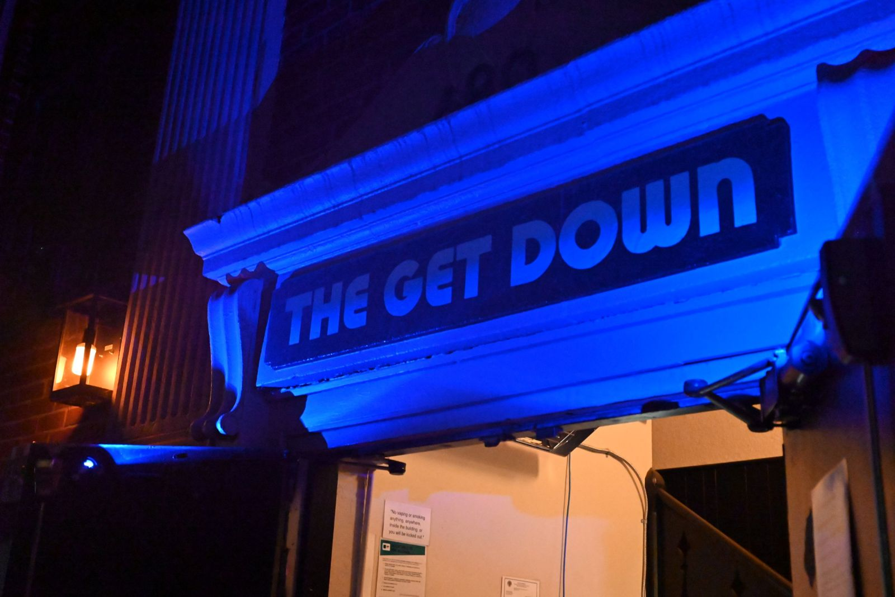

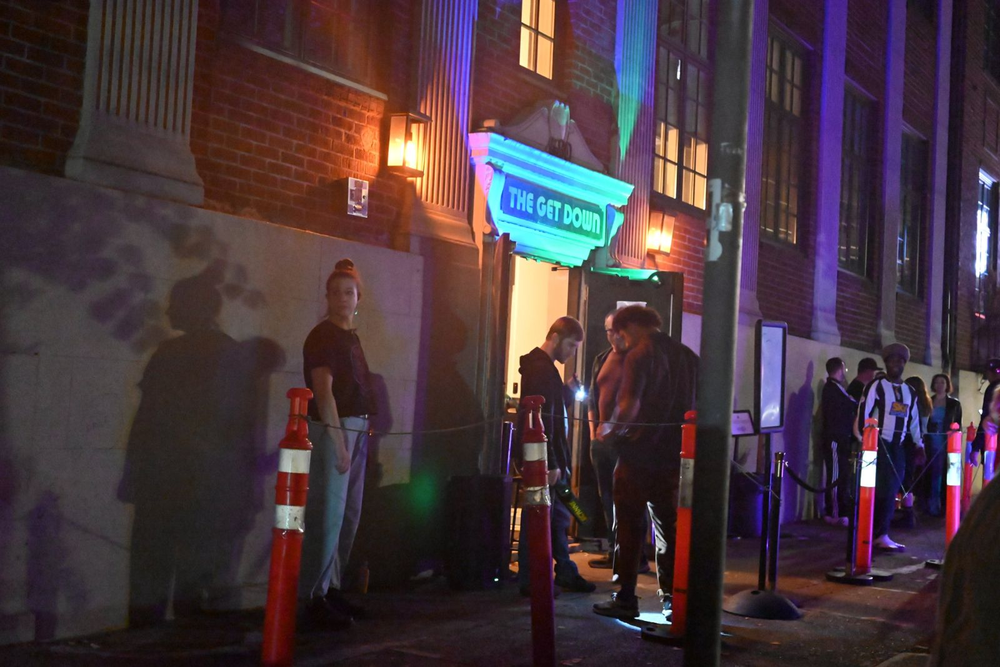

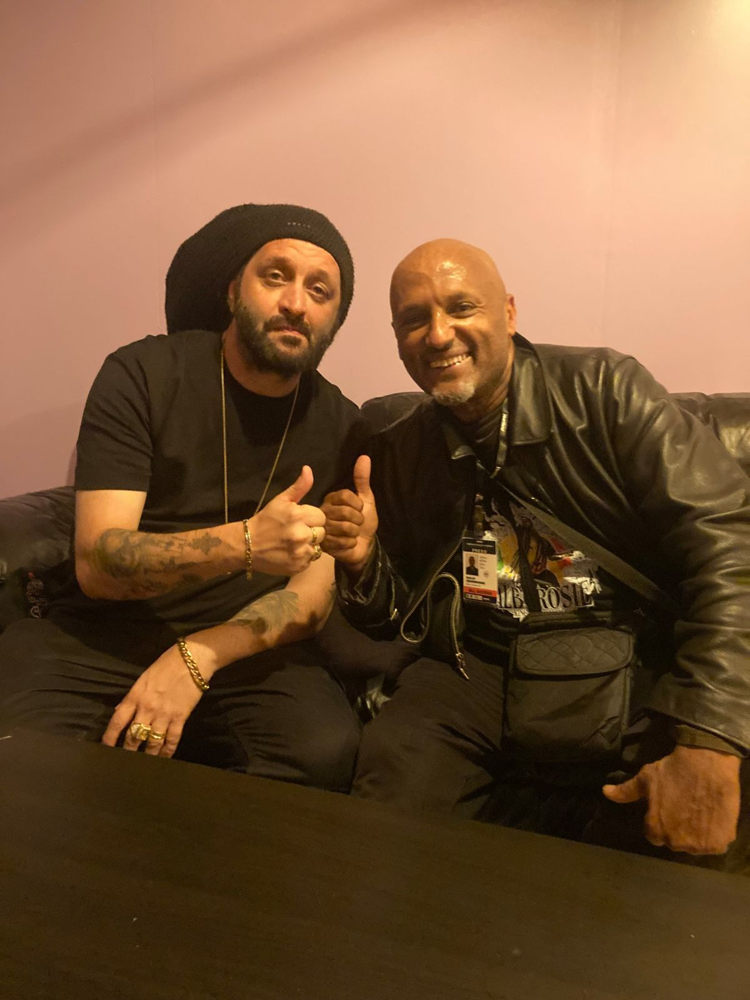

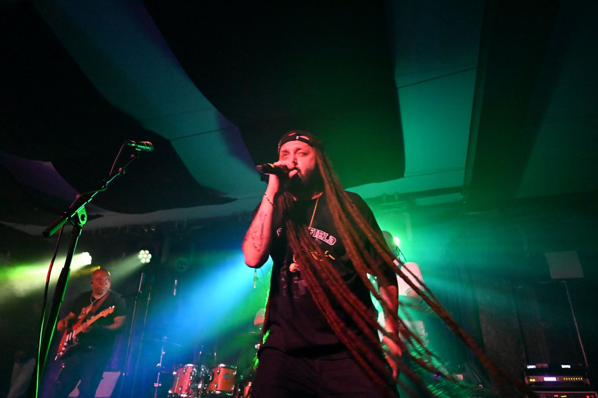

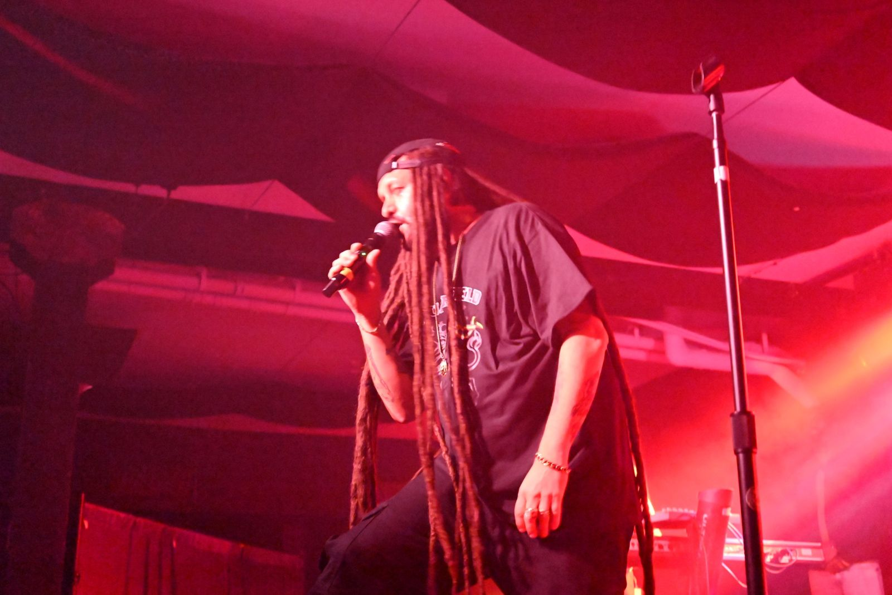

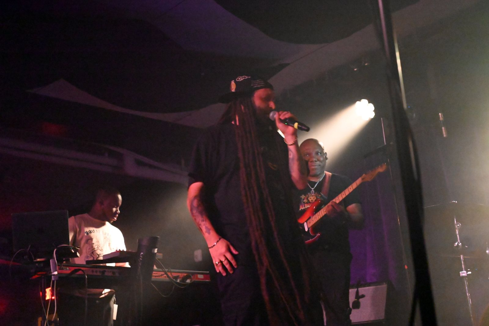

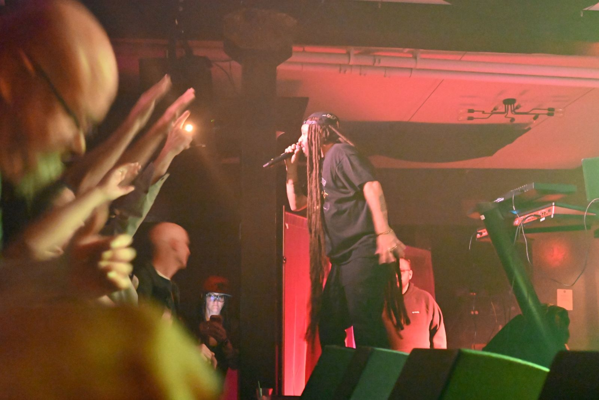

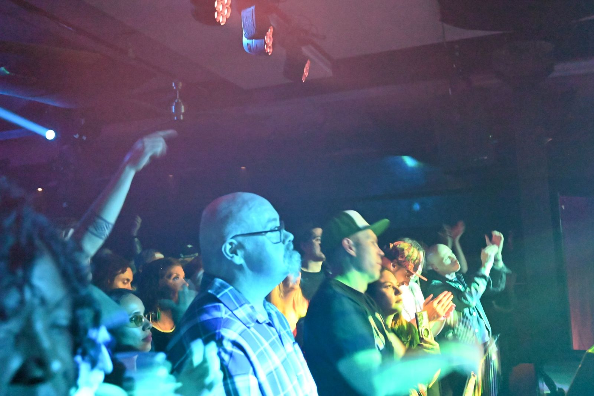

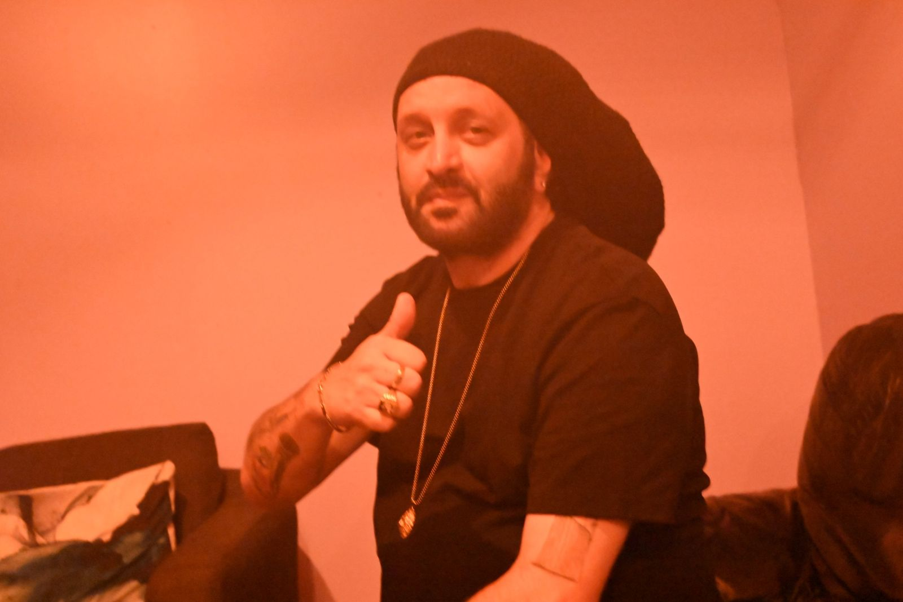


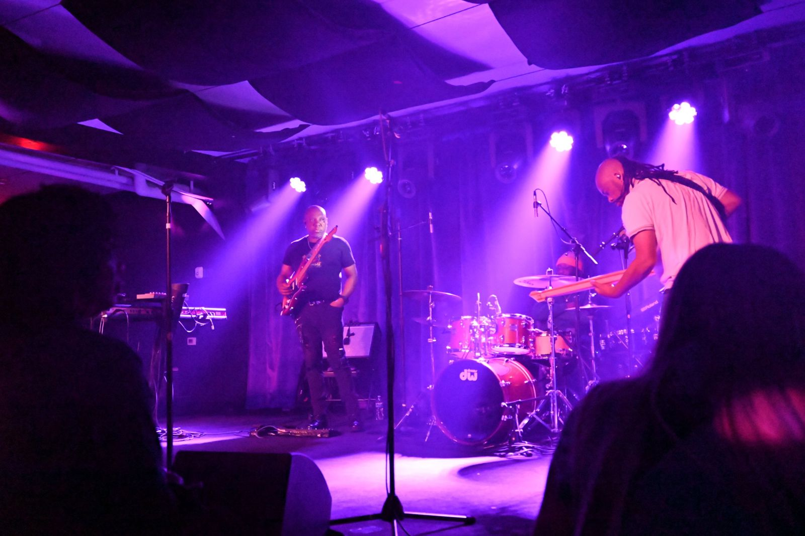

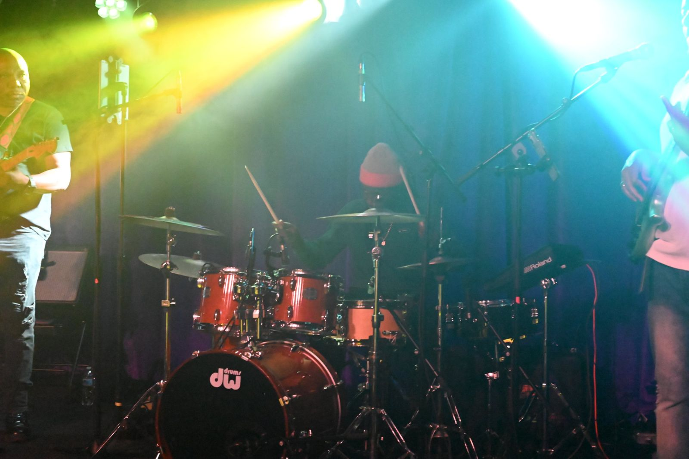
Photo gallery: tap any picture to enlarge. Photos: Paolos Kidanemariam / Emerald Valley Courier.
The roof was on fire at The Get Down. Alborosie set it alight.
The music came first. Then his voice echoed through the room, and people gathered closer, as if to witness the arrival of a king. The bass trembled the floor, the drums announced his arrival, the keyboard and guitars proclaimed his coming. And then it happened: the king showed up, in kingly character.
Organic, magical, highly positive
What followed was organic and magical, a night of highly positive vibration. The crowd kept singing his songs through the night, every one of them, and as Alborosie kept vibrating, we all felt his magical energy penetrating our bones. Nobody could stand still. The whole room was dancing and singing along, full of that same positive vibration.
His band, Shengen Clan, deserves its own headline. Tight, powerful and locked in from the first note, they were the best band I have heard this year.
People gathered closer, as if to witness the arrival of a king.
Backstage, like a music video
After the show, backstage felt like a scene from a music video. The band sat together, and I saluted them like generals, with much respect. Further in sat Alborosie, humble among his bredrens.
A fist bump in respect, congratulations on a very successful night, and a photo together. Backstage, Alborosie is exactly who he is onstage: organic, humble and highly positive.
"The music speaks for itself"
Earlier in the evening, Alborosie sat down with the Emerald Valley Courier. Asked how a non-Jamaican earns acceptance as a reggae artist in Jamaica, his answer was simple: the music speaks for itself. That night in Portland, the music spoke loud and clear. Listen to the full interview below.
Listen: the interview
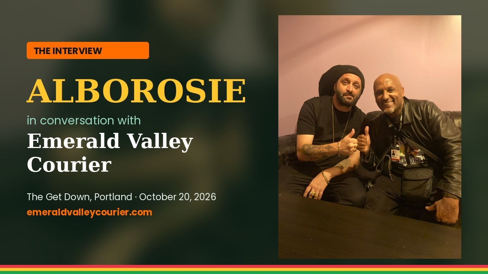
Read the interview
Lightly edited for length and clarity. Questions by Paolos Kidanemariam.
Paolos: You were born in Sicily and have spent most of your life in Jamaica. When you step on a stage in a place like Portland, which home do you carry in your heart?
Alborosie: I just carry myself. I carry good vibes. I live in Jamaica, so I represent Jamaica, and as an Italian I also represent my own culture. So it's a mixture of many, many cultures.
Paolos: What first pulled you from Italy to Kingston, and when did Jamaica start to feel like home?
Alborosie: I wanted to discover reggae music deeper, to be more in tune with the culture, and it simply was not enough being a tourist. So I decided to spend more time in Jamaica. It was a way to study reggae. I'm a forever student.
Paolos: You named your ninth album Nine Mile, after Bob Marley's birthplace. What does that place mean to you?
Alborosie: Nine Mile is a key place for reggae, the same as Trench Town and Waterhouse. These are the key places reggae music comes from. The location was just magical.
Paolos: The closing title track is dedicated to Jo Mersa Marley. I met Jo Mersa when he was a little boy in Santa Cruz, California. What did he mean to you?
Alborosie: He was a really, really great artist, and we have a song together. We used to call each other to exchange musical views, opinions and suggestions. That loss really caught me, so I decided to dedicate a song to him.
Paolos: You cover Jimmy Cliff's "Club Paradise" and sing in Spanish and Portuguese on tracks like "No Tan Distintos" and "Ipanema." Why bring Latin and Brazilian sounds into a roots album?
Alborosie: I'm really influenced by Latin American culture, and I speak Spanish fluently, so writing songs in Spanish was a natural journey. "Ipanema" is a tribute to Brazilian culture, a place in Rio de Janeiro. It's a tribute to many cultures, from Argentina to Brazil to Venezuela.
Paolos: "Come My Way" builds on a classic riddim. As a producer, how do you decide when to honor a classic and when to build your own sound?
Alborosie: I listen to music daily, to riddims from King Tubby, Pablo Moses and a lot of people. When I listen, I start seeing the riddim, and when I heard that version, I knew.
Paolos: "Digital Love" takes on how screens disconnect people. How is technology changing the way people experience reggae?
Alborosie: There's a huge difference now between organic music and artificial intelligence music, so we're able to choose. Personally, I like to stick to the roots and the culture. I like tradition; I'm still old school. At the same time, I don't condemn technology. I use it too, but in the right amount. I don't let technology take over the way I work.
Paolos: You're one of the few non-Jamaicans fully accepted in Jamaican reggae. What did it take to earn that respect?
Alborosie: I think the music speaks for itself. My work speaks for itself: the number of shows, the productions, the contribution to the music and the culture. Either you respect it or you ignore it. At the end of the day, when somebody works hard, you have to respect it.
Paolos: I'm an Eritrean and Ethiopian reggae artist here in Oregon myself. What role should Africa, and Ethiopia in particular, play in reggae's future?
Alborosie: I think people outside Africa, outside Ethiopia, should pay more respect to the motherland. I've been to Ethiopia many, many times, and I've learned so much, from seeing His Imperial Majesty's places and from talking to people. It's an experience people must have.
Paolos: You shot the video for "Calling Selassie" in Ethiopia?
Alborosie: Yes, yes.
Paolos: What should fans in the Pacific Northwest know before they see you tonight?
Alborosie: They don't need to know anything. Just come to the show, get a good vibe and enjoy yourself.
Paolos: You often follow an album with a dub version. Can we expect a Nine Mile dub album, and what's next?
Alborosie: We're coming with a new album honoring Greensleeves Records' anniversary. I voiced over classic Greensleeves riddims with brand new songs, and the project is very, very nice. I'm not going to tell you the title yet. And a Nine Mile dub? Of course.
Paolos: Is there anything you want your fans in Eugene and Oregon to know?
Alborosie: Follow the program, check the social media, listen to the music and support reggae music in general. We need strength from the people. This is a serious time, and the best soundtrack for a serious time is definitely reggae music.
"The best soundtrack for a serious time is definitely reggae music."Alborosie, to the Emerald Valley Courier
Quick Facts
- Artist: Alborosie & Shengen Clan
- Date: Tuesday, October 20, 2026
- Venue: The Get Down, Portland, Oregon
- Latest album: Nine Mile (Greensleeves / VP Records)
The verdict: organic, humble and highly positive, onstage and off. If Alborosie and Shengen Clan come anywhere near you, go, and be ready to dance.